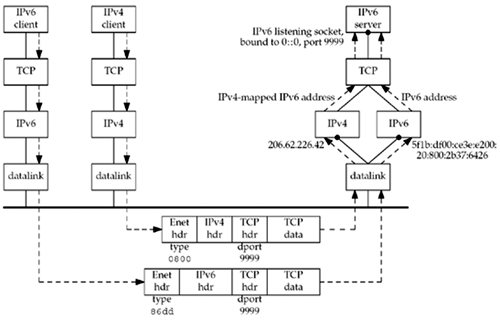
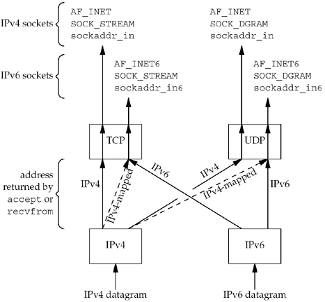

| [ Team LiB ] |
|
12.2 IPv4 Client, IPv6 ServerA general property of a dual-stack host is that IPv6 servers can handle both IPv4 and IPv6 clients. This is done using IPv4-mapped IPv6 addresses (Figure A.10). Figure 12.2 shows an example of this. Figure 12.2. IPv6 server on dual-stack host serving IPv4 and IPv6 clients. We have an IPv4 client and an IPv6 client on the left. The server on the right is written using IPv6 and it is running on a dual-stack host. The server has created an IPv6 listening TCP socket that is bound to the IPv6 wildcard address and TCP port 9999. We assume the clients and server are on the same Ethernet. They could also be connected by routers, as long as all the routers support IPv4 and IPv6, but that adds nothing to this discussion. Section B.3 discusses a different case where IPv6 clients and servers are connected by IPv4-only routers. We assume both clients send SYN segments to establish a connection with the server. The IPv4 client host will send the SYN in an IPv4 datagram and the IPv6 client host will send the SYN in an IPv6 datagram. The TCP segment from the IPv4 client appears on the wire as an Ethernet header followed by an IPv4 header, a TCP header, and the TCP data. The Ethernet header contains a type field of 0x0800, which identifies the frame as an IPv4 frame. The TCP header contains the destination port of 9999. (Appendix A talks more about the formats and contents of these headers.) The destination IP address in the IPv4 header, which we do not show, would be 206.62.226.42. The TCP segment from the IPv6 client appears on the wire as an Ethernet header followed by an IPv6 header, a TCP header, and the TCP data. The Ethernet header contains a type field of 0x86dd, which identifies the frame as an IPv6 frame. The TCP header has the same format as the TCP header in the IPv4 packet and contains the destination port of 9999. The destination IP address in the IPv6 header, which we do not show, would be 5f1b:df00:ce3e:e200:20:800:2b37:6426. The receiving datalink looks at the Ethernet type field and passes each frame to the appropriate IP module. The IPv4 module, probably in conjunction with the TCP module, detects that the destination socket is an IPv6 socket, and the source IPv4 address in the IPv4 header is converted into the equivalent IPv4-mapped IPv6 address. That mapped address is returned to the IPv6 socket as the client's IPv6 address when accept returns to the server with the IPv4 client connection. All remaining datagrams for this connection are IPv4 datagrams. When accept returns to the server with the IPv6 client connection, the client's IPv6 address does not change from whatever source address appears in the IPv6 header. All remaining datagrams for this connection are IPv6 datagrams. We can summarize the steps that allow an IPv4 TCP client to communicate with an IPv6 server as follows:
An underlying assumption in this scenario is that the dual-stack server host has both an IPv4 address and an IPv6 address. This will work until all the IPv4 addresses are taken. The scenario is similar for an IPv6 UDP server, but the address format can change for each datagram. For example, if the IPv6 server receives a datagram from an IPv4 client, the address returned by recvfrom will be the client's IPv4-mapped IPv6 address. The server responds to this client's request by calling sendto with the IPv4-mapped IPv6 address as the destination. This address format tells the kernel to send an IPv4 datagram to the client. But the next datagram received for the server could be an IPv6 datagram, and recvfrom will return the IPv6 address. If the server responds, the kernel will generate an IPv6 datagram. Figure 12.3 summarizes how a received IPv4 or IPv6 datagram is processed, depending on the type of the receiving socket, for TCP and UDP, assuming a dual-stack host. Figure 12.3. Processing of received IPv4 or IPv6 datagrams, depending on type of receiving socket.
Most dual-stack hosts should use the following rules in dealing with listening sockets:
|
| [ Team LiB ] |
|